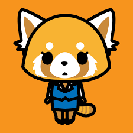

Aggretsuko, also known by its original Japanese title Aggressive Retsuko, is a Japanese anime musical comedy franchise based on the eponymous character created by "Yeti" for the mascot company Sanrio.
Other Sanrio characters include:
However, Aggretsuko is still my favorite!
